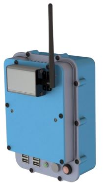

S Series
Permanent-Mount Spectrometer, aka Polaris-S

영구장착/이동용 방사선 모니터링 솔류션
- S Series는 방사선원의 변화 및 모니터링이 필요한 특정 산업현장에서
실시간으로 선원의 종류와 변화량을 추적할 수 있습니다.
- S100/S400 시리즈는 특정공간에 부착하여 실시간으로 방사선원을 모니터링하거나
태블릿과 함께 움직이며 사용할 수 있는 유연성을 제공합니다.
- 특정 파이프 라인 또는 밸브에서의 방사선원 변화를 모니터링 하거나 관심공간에서 시간에 따른
선원의 변화를 실시간으로 체크할 수 있습니다.
Features
- Practical high-performance gamma-ray spectrometer
- Real-time view over network available
- Compact and light weight
- Industry-leading efficiency and energy resolution
Applications
- Isotopic characterization of pipes and valves
- Isotopic trend analysis
- Outage monitoring
|
|
- Energy Resolution : < 1.0 % (FWHM @ 662keV)
- Spectrometer Range : 50 ~ 3000 keV
- Imaging Range : N/A
- Weight : < 2.5 kg.
- Battery Life : > 6 hrs.
- CZT Volume :
- S100 : > 4.5 cm3
- S400 : > 19 cm3
|